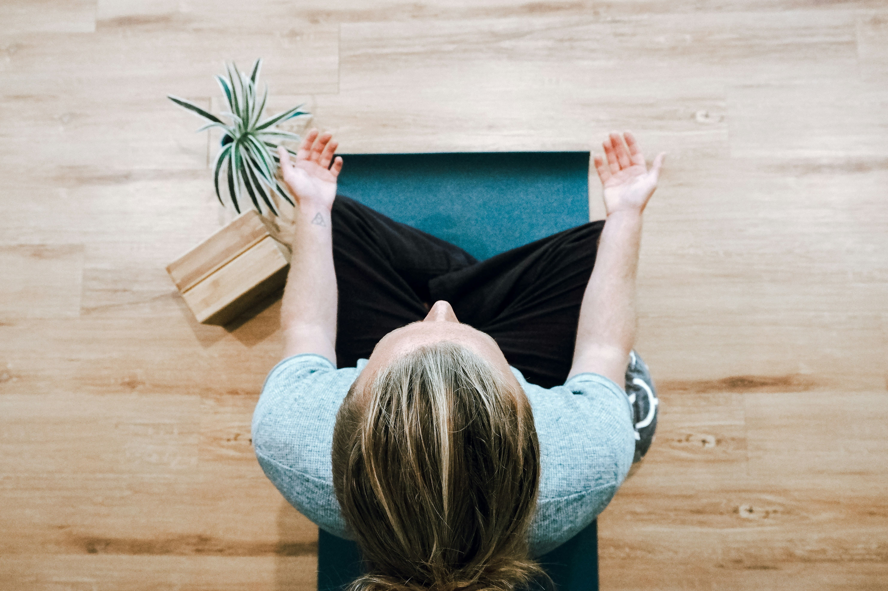

Anxiety during pregnancy is far more common than most people talk about. Studies suggest up to 1 in 5 pregnant women experience clinically significant anxiety — yet it's often overshadowed by the cultural expectation that pregnancy should be a purely joyful time. If you're feeling worried, overwhelmed, or fearful, you are not alone, and there are gentle, effective ways to find relief without medication.
"Anxiety in pregnancy doesn't mean you're not grateful. It means your nervous system is working hard to protect the most precious thing in your world."
Why does pregnancy anxiety happen?
Pregnancy triggers a cascade of hormonal changes that directly affect the brain's fear and stress responses. Progesterone and oestrogen fluctuations can amplify anxiety, especially in the first trimester when they surge most dramatically. Add to this the very real uncertainties of pregnancy — health, finances, relationships, birth — and it's no surprise that many mamas struggle.
For first-time mothers, the unknown nature of childbirth and parenthood can be particularly overwhelming. For those who have experienced pregnancy loss, hypervigilance and fear are completely understandable responses. Wherever your anxiety comes from, it deserves to be taken seriously — and treated with compassion.
Common triggers during pregnancy

Understanding what triggers your anxiety can help you manage it more effectively. Common triggers include:
- Fear of miscarriage — particularly in the first trimester before the 12-week scan
- Worries about the baby's health — especially after screenings or if there have been complications
- Financial concerns — the cost of a baby can feel overwhelming
- Relationship changes — wondering how your partnership will cope with a newborn
- Fear of birth — a very common concern that tends to intensify in the third trimester
- Body image — the rapid physical changes of pregnancy can be difficult to adjust to
- Work and career — concerns about maternity leave, returning to work, and career impact
Recognising your specific triggers allows you to address them directly — whether through information, support, or professional help.
Natural strategies that actually work
1. Breathwork — your nervous system's reset button
Deep, slow breathing activates your parasympathetic nervous system — the "rest and digest" mode that counteracts the fight-or-flight stress response. Try box breathing: inhale for 4 counts, hold for 4, exhale for 4, hold for 4. Repeat 5 times whenever anxiety rises. It works within minutes and can be done anywhere — at your desk, in the car, or lying in bed at night.
Another effective technique is 4-7-8 breathing: inhale for 4 counts, hold for 7, exhale slowly for 8. The extended exhale is particularly effective at activating the calming parasympathetic response. Practice this twice daily, not just when anxiety strikes, to build your nervous system's resilience over time.
2. Prenatal yoga
Multiple studies have found that regular prenatal yoga significantly reduces anxiety and depression during pregnancy. It combines breathwork, gentle movement, and mindfulness — three of the most effective anxiety tools — in one practice. Even one session per week makes a measurable difference. Look for a qualified prenatal yoga instructor who can modify poses safely for each trimester.
If you can't attend a class, there are excellent free prenatal yoga videos available online. Even 15 minutes of gentle stretching and breathing before bed can transform the quality of your sleep and your anxiety levels.
3. Magnesium supplementation
Magnesium is one of the most important minerals for a calm nervous system, and many pregnant women are deficient due to the increased demands of pregnancy. Ask your midwife or doctor about magnesium glycinate or magnesium citrate supplements — they're gentle on the stomach and highly absorbable. The glycinate form is particularly well-tolerated and crosses the blood-brain barrier effectively.
A warm bath with magnesium flakes or Epsom salts is also wonderfully calming. The magnesium is absorbed transdermally through the skin, providing both physical relaxation and nervous system support. Aim for 20 minutes in a warm (not hot) bath, two to three times per week.
4. Limit news and social media
Anxiety feeds on uncertainty and worst-case scenarios — and social media and news feeds deliver both in endless supply. The algorithm is specifically designed to show you content that provokes an emotional reaction, which often means fear and outrage. Consider a daily time limit for screens, especially in the hour before bed.
Be particularly careful about pregnancy forums and groups where anxious mamas share their worst experiences. While community support is valuable, consuming a constant stream of pregnancy complications and horror birth stories will not serve your mental health. Curate your feeds ruthlessly.
5. Nature and gentle movement
Research consistently shows that spending time in nature reduces cortisol levels and calms the nervous system. A 20-minute walk in a park, garden, or along a beach is a genuine, evidence-backed anxiety treatment — comparable in some studies to low-dose anti-anxiety medication. It also supports healthy sleep, reduces back pain, and prepares your body for labour.
If walking is uncomfortable, simply sitting in a garden or park and engaging your senses — noticing the sounds, smells, textures, and sights around you — activates the same calming response. This practice, sometimes called grounding or earthing, is remarkably effective for acute anxiety.
6. Journalling and worry scheduling
Writing down your worries can help externalise them — getting them out of your head and onto paper where they feel more manageable. Try keeping a worry journal beside your bed and writing down any anxious thoughts before sleep, along with a brief note about what action (if any) you can take.
Worry scheduling is a powerful cognitive technique: designate 15 minutes per day as your official "worry time." When anxious thoughts arise outside this window, acknowledge them and postpone them to your designated time. This prevents anxiety from spreading across your entire day.
Pregnancy Journal
A beautiful guided pregnancy journal with weekly prompts, space for thoughts and feelings, and letters to your baby. Writing regularly is one of the most effective tools for managing pregnancy anxiety.
View on Amazon → As an Amazon Associate we earn from qualifying purchases at no extra cost to you.7. Talk to someone you trust
Anxiety thrives in silence. Talking to a trusted friend, your partner, a midwife, or a counsellor about your fears can dramatically reduce their power. Often, simply articulating a fear out loud reduces its intensity — it's much harder for catastrophic thoughts to maintain their grip once they've been spoken.
If you don't feel you can talk to someone in your life, many areas have free or low-cost pregnancy counselling services. Your GP or midwife can refer you. Online therapy platforms have also made counselling more accessible than ever before.
The connection between sleep and anxiety
Anxiety and poor sleep create a vicious cycle — anxiety makes it harder to sleep, and sleep deprivation amplifies anxiety. Prioritising sleep hygiene during pregnancy is therefore one of the most effective things you can do for your mental health.
Practical sleep supports include: keeping a consistent sleep schedule, using a pregnancy pillow for physical comfort, keeping your bedroom cool and dark, avoiding screens for at least an hour before bed, and practising a calming bedtime routine. If you wake with anxious thoughts in the night, keep a notepad beside the bed to write them down rather than ruminating.
Nutrition for a calmer pregnancy
What you eat has a direct impact on your mood and anxiety levels. Key nutritional supports for a calmer nervous system include:
- Omega-3 fatty acids (found in oily fish, walnuts, and flaxseeds) — support brain health and reduce inflammation linked to anxiety
- B vitamins (found in whole grains, eggs, leafy greens) — essential for neurotransmitter production
- Magnesium (found in dark chocolate, nuts, seeds, leafy greens) — the calming mineral
- Probiotic foods (yogurt, kefir, sauerkraut) — the gut-brain connection is powerful; a healthy gut microbiome supports positive mood
- Complex carbohydrates — stabilise blood sugar, which prevents the anxiety spikes associated with hypoglycaemia
Conversely, minimising caffeine, refined sugar, and alcohol (which should be avoided entirely in pregnancy) can significantly reduce anxiety levels.
When to seek professional help
While these strategies are powerful, they're not a substitute for professional care if your anxiety is significantly impacting your daily life. Signs that it's time to reach out for extra support include:
- Panic attacks — sudden episodes of intense fear with physical symptoms
- Inability to eat, sleep, or function in daily life
- Intrusive, unwanted thoughts that you can't control
- Anxiety that doesn't respond to self-care strategies
- Feeling constantly on edge, unable to relax
- Avoiding medical appointments out of fear
Your mental health matters as much as your physical health during pregnancy. Seeking help is not weakness — it is the most loving thing you can do for yourself and your baby.
Get your free personalized plan
Week-by-week eco pregnancy guide covering all 40 weeks — including mental wellness guidance — completely free, no sign-up required.
Create my free plan →